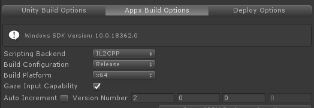
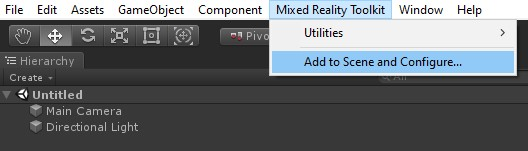
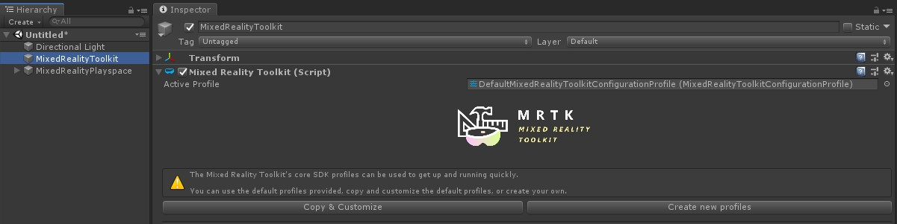
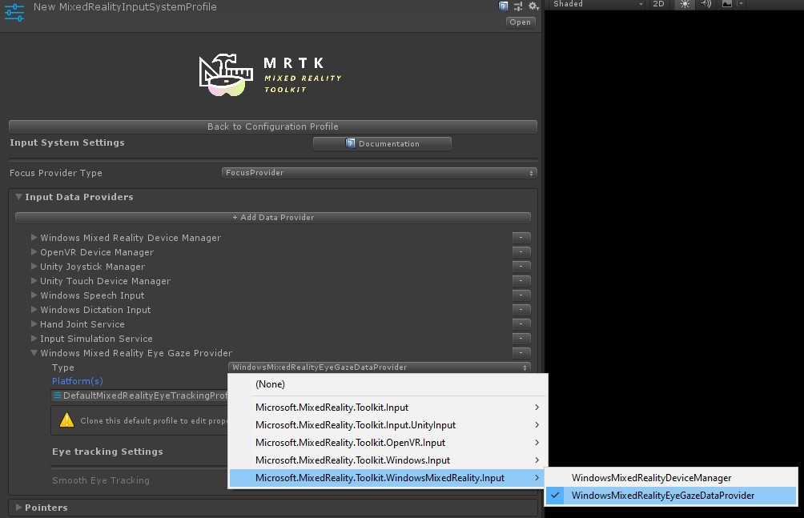
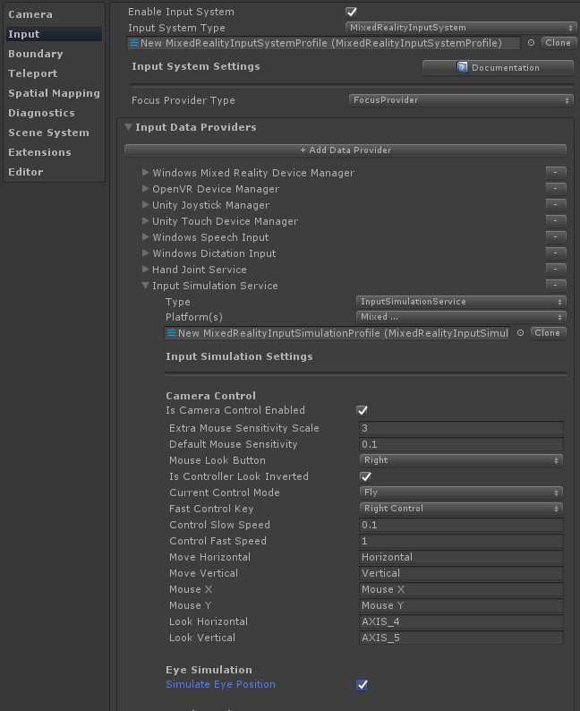

开始使用MRTK中的眼动跟踪
本页面介绍如何设置UnityMRTK场景以在应用程序中使用眼动跟踪。 以下假设您是从新场景开始的。 或者，您可以检查出已经配置好的MRTK眼动跟踪示例和大量可以直接建立的最佳示例。
眼动跟踪要求清单
为了使眼动跟踪正常工作，必须满足以下要求。 如果您是首次在HoloLens 2上进行眼动跟踪，以及如何在MRTK中设置眼动跟踪，请不要担心！ 我们将在下面详细介绍如何解决它们中的每个问题。
1.必须在输入系统中添加一个 'Eye Gaze Data Provider' 。这可以从平台提供眼动跟踪数据。 2.必须在应用程序清单中启用 'GazeInput' 功能。 此功能可以在Unity 2019中设置，但可以在Unity 2018及更早版本中设置，此功能仅在Visual Studio和MRTK生成工具中可用 3.必须为当前用户校准HoloLens，请检查我们的样本来检测用户是否进行了眼睛校准。
关于 GazeInput 功能的说明
MRTK提供的构建工具(即 Mixed Reality Toolkit -> Utilities -> Build Window) 可以自动为您启用GazeInput功能。为了做到这一点， 您需要确保在'Appx Build Options'选项卡上选中了 'Gaze Input Capability' ：

在Unity 2019 之前，使用Unity 的build window时，需要在Unity构建后手动添加功能，如下所示
- 打开您已编译的Visual Studio项目，然后在您的解决方案中打开 'Package.appxmanifest' 。
- 确保选中 Capabilities 下的 'GazeInput' 复选框。如果看不到 'GazeInput' 功能，请检查您的系统是否符合使用MRTK的先决条件 (特别是Windows SDK版本)。
请注意: 如果您要构建到新的构建文件夹中，则只需执行此操作。 这意味着，如果您已经建立了您的Unity项目并在先设置了appxmanifest，并且现在又针对相同的文件夹，则无需重新应用您的更改。
逐步设置眼动跟踪
设置场景
只需在菜单栏中单击 'Mixed Reality Toolkit -> Configure…' 即可设置 MixedRealityToolkit 。

设置眼动跟踪所需的 MRTK 配置文件
设置MRTK场景后，将要求您选择MRTK的配置文件。 您只需选择 DefaultMixedRealityToolkitConfigurationProfile ，然后选择 'Copy & Customize' 选项即可。

创建一个 "eye gaze data provider"
- 单击您的MRTK配置文件中的 'Input' 选项卡.
- 要编辑默认的 ( 'DefaultMixedRealityInputSystemProfile' ), 请单击旁边的 'Clone' 按钮. 出现 'Clone Profile' 菜单. 只需在该菜单底部的 'Clone' 按钮即可.
- 双击新的 input profile，展开_'Input Data Providers'_ ，然后选择_'+ Add Data Provider'_ .
- 创建一个新的 data provider:
- 在 Type 下选择 'Microsoft.MixedReality.Toolkit.WindowsMixedReality.Input' -> 'WindowsMixedRealityEyeGazeDataProvider'
- 对于 Platform(s) 选择 'Windows Universal'.

在Unity编辑器中模拟眼动跟踪
您可以在Unity编辑器中模拟眼动跟踪输入，以确保在将应用程序部署到您的HoloLens 2 之前正确触发了事件。
只需使用相机的位置作为眼睛注视原点，并使用相机的前向方向作为眼睛注视方向来模拟眼睛注视信号。
虽然这对初次测试非常有用，但请注意，这对于快速移动眼睛不是一个很好的模仿。
为此，最好确保在HoloLens 2上进行基于眼动交互的频繁测试。
启用眼动跟踪模拟:
- 单击MRTK配置文件中的 'Input' 选项卡.
- 导航到 'Input Data Providers' -> 'Input Simulation Service'.
- 克隆 'DefaultMixedRealityInputSimpulationProfile' 以对其进行更改.
- 选中 'Simulate Eye Position' 复选框.

禁用默认的 head gaze cursor: 一般而言，建议避免显示eye gaze cursor ，或者如果必须使用，请把它设置得 非常 精妙。
我们建议隐藏默认情况下附加到 MRTK gaze pointer 配置文件的默认head gaze cursor。 - 导航到您的MRTK配置文件 -> 'Input' -> 'Pointers' - 克隆 _'DefaultMixedRealityInputPointerProfile'_以对其进行更改. - 在 'Pointer Settings' 的顶部, 应为 'GazeCursor' 分配一个不可见的cursor预制体. 您可以通过从MRTK Foundation中选择 'EyeGazeCursor' prefab来执行此操作。
在 gaze provider 中启用 eye-based gaze
在HoloLens v1中，头部凝视被用作主要指向技术。
头部凝视仍然通过MRTK中 附加在你 相机 上的 GazeProvider 可用，你可以选中 input pointer profile中 gaze settings 的 'IsEyeTrackingEnabled' 复选框来启用眼部凝视
Note
开发人员可以通过更改 'GazeProvider' 的 'IsEyeTrackingEnabled' 属性来在代码中基于眼睛的凝视和基于头部的凝视之间进行切换。
Important
如果未满足任何眼动跟踪要求，则该应用程序将自动回退至基于头的凝视。
访问眼睛凝视数据
现在，已设置您的场景以使用眼动跟踪，让我们来看看如何在您的脚本中访问它： 通过EyeGazeProvider访问眼动跟踪数据 和眼动支持的目标选择.
在HoloLens 2 上测试您的Unity应用
使用眼动跟踪构建您的应用程序应该类似于您将如何编译其他HoloLens 2 MRTK应用程序。请确保您已启用关于 GazeInput 功能的说明 部分中的 'Gaze Input' 功能
眼睛校准
最后，请不要忘记对您的HoloLens 2进行眼睛校准。 如果用户未校准，则眼动跟踪系统将不会返回任何输入。 向上翻转面镜之后再向下翻，是最容易进行校准的方法。 此时应该出现系统通知，欢迎您作为新用户使用并要求您进行眼睛校准。 或者，您可以在系统设置中找到眼图校准：Settings > System > Calibration > Run eye calibration。
眼动跟踪许可
首次启动您的 HoloLens 2 应用程序时，应该弹出一个提示，要求用户允许使用眼动跟踪。 如果未显示，则通常表示未设置 'GazeInput' 功能的指示。
权限提示一次出现后，不会再次自动显示。 如果您 "denied eye tracking permission" ，则可以在Settings -> Privacy -> Apps 中重置此设置。
这应该使您从使用MRTK Unity应用程序中的眼动跟踪开始。 不要忘记浏览我们的MRTK眼动跟踪教程和示例，它演示了如何使用眼动跟踪输入，并方便地提供了可以在您的项目中重复使用的脚本。